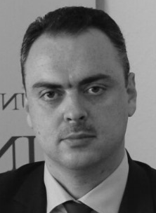

Dr. Sedad Bešlija
History, Ottoman History
Researcher, Univerzitet u Sarajevu - Institut za istoriju
Biography
Dr. Sedad Bešlija was born on July 12, 1985, in Prijedor. He completed his secondary education at the Gazi Husrev-bey Madrasa in Sarajevo. He studied history and Turkish language and literature at the Faculty of Philosophy in Sarajevo, where he also completed his postgraduate and doctoral studies with the highest marks, specializing in the history of Bosnia and Herzegovina during the Ottoman period. Since September 12, 2009, he has been employed at the Institute of History of the University of Sarajevo. From May 7, 2019, to July 9, 2020, he served as Acting Director of the Institute of History, and on July 9, 2020, he was elected Director of the Institute for a four-year term. In April 2024, he was elected for a second term. In January 2020, he was appointed Senior Research Associate in Early History – Ottoman Period, for a period of six years. In the academic years 2023/24 and 2024/25, he was elected President of the Humanities Group at the University of Sarajevo, and is also a member of the University Senate. Since 2024, he has been a member of the Committee for Historical Sciences of the Academy of Sciences and Arts of Bosnia and Herzegovina. In 2017, the Institute of History published his first scholarly study, Istimalet: Bosnia in the Ottoman Political Strategy – 15th and 16th Century. He is also the author of the monograph The Herzegovina Sanjak in the 17th Century, published by the Institute of History UNSA in 2023, and co-author of the books The Arabic Language in Bosnia and Herzegovina and Sinan-pasha Borovinić: Social Status, Origin, Political Rise, the Beginning of the Urbanization of Mostar. In 2023, in his capacity as editor-in-chief and project coordinator, he completed the publication of a major national scholarly project, the first institutional synthetic overview, the six-volume edition History of Bosnia and Herzegovina, produced by the Institute of History UNSA, involving 9 editors and 47 PhDs. In 2023 and 2024, for the results achieved as Director of the Institute of History, he received collective awards – the Plaque of the Council of the Congress of Bosniak Intellectuals and the Plaque of Sarajevo Canton. In his scholarly work so far, Dr. Bešlija has mainly focused on the history of Bosnia and Herzegovina in the Ottoman period, especially from the 15th to the 17th centuries, with research topics covering military-political, diplomatic, religious, and cultural history. He has also occasionally worked on significant historical figures as well as the scholarship of distinguished Ottomanists.